序章
余り物の旅立ち
長男は領を、次男は軍を継いだ。末弟リュカの名は、最後まで呼ばれなかった。家を出た夜、肩に乗った黒猫が口をきく。「魚をよこせ。代わりに、死なない程度には守ってやる」
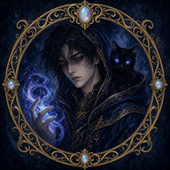
PRINCE OF CHAOSINTRODUCTION
かつて世界を覆い尽くさんとした混沌を退け、二千年の平穏を紡いできた大地。
北の果て、魔を阻むローザリア王国の盾――アルステア辺境伯領。
歴代の領主が鉄の規律で守り継いできた歴戦の城館で、今宵、次代を託す厳粛な継承式典の火が灯る。
長男レクトは領地の統治を、次男ジルは北の軍を託された。
だが、末弟リュカの席には名札すら置かれず、最後までその名が呼ばれることはなかった。
誰にも顧みられない「余り物の末子」。彼の耳には、ときおり誰にも聞こえない「鼓動」が届く。
地の底には、魔物のひしめく迷宮が口を開けている。
災いが起きるたび、民はリュカを指さすようになった――あれが「呪いの公子」だ、と。
母の遺した青藍の外套と、口をきく黒猫だけを連れて、少年は迷宮の深淵へ降りていく。
MYSTERIES
なぜ、彼は
「呪いの公子」と呼ばれたのか。
誰にも聞こえない鼓動は、
誰のものなのか。
口をきく黒猫は、
なぜ彼を守るのか。
迷宮の底で、
何が待っているのか。
最初の答えは、第1章で。
残りの答えは、その先の迷宮で。
STORY
語りの窓と、話し手を指す吹き出しで綴られる群像劇。
見届けた章は、タイトルの「物語」からいつでも振り返れます。
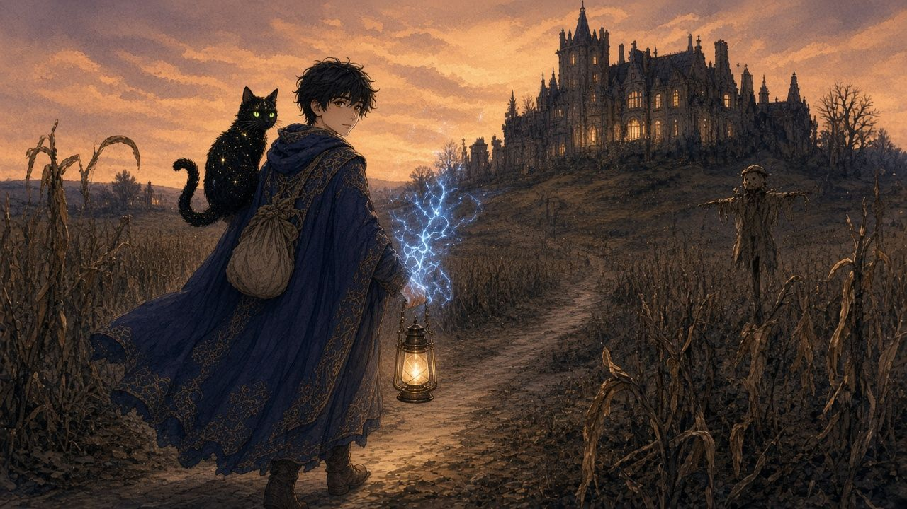
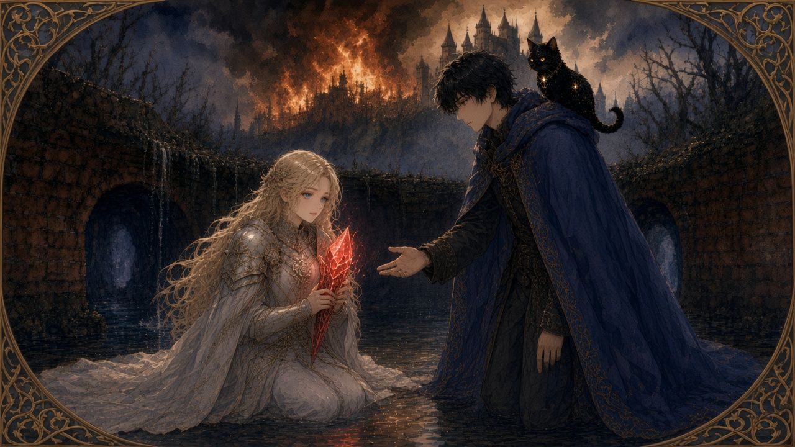
序章
長男は領を、次男は軍を継いだ。末弟リュカの名は、最後まで呼ばれなかった。家を出た夜、肩に乗った黒猫が口をきく。「魚をよこせ。代わりに、死なない程度には守ってやる」
第1章
建国祭の夜、王都が炎に包まれる。燃え落ちる城の地下水路で、リュカは王女エリアーナと出会う。そしてこの夜を境に、人々は彼をこう呼びはじめる――「呪いの公子」と。
CHARACTERS
余り物の公子と、口の悪い黒猫と、炎の夜に出会う王女。
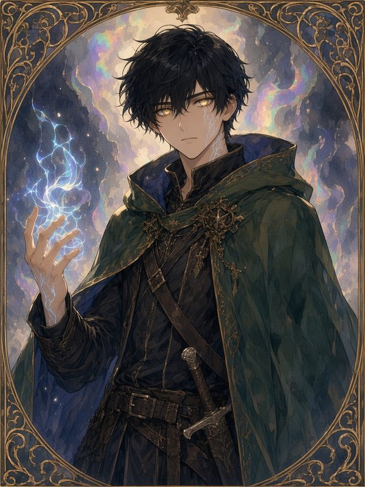
主人公 ／ 辺境伯家の末弟
「……置いていかない」
継承式典で名を呼ばれなかった18歳の「余り物」。口数は少ないが、目の前の誰かを見捨てない。ときおり、誰にも聞こえない鼓動を耳にする。
まだ明かせない出会いが、この先に。
その顔と名前は、迷宮の中で。
DUNGEON & MONSTERS
一歩ずつ、方眼の闇を踏みしめて進む。
重厚な鉄格子、壁の窪み棚、感圧板、そして底なしの落とし穴――クラシックな本格3DダンジョンRPGの気風を宿した立体迷宮が、灯を求める者を拒む。
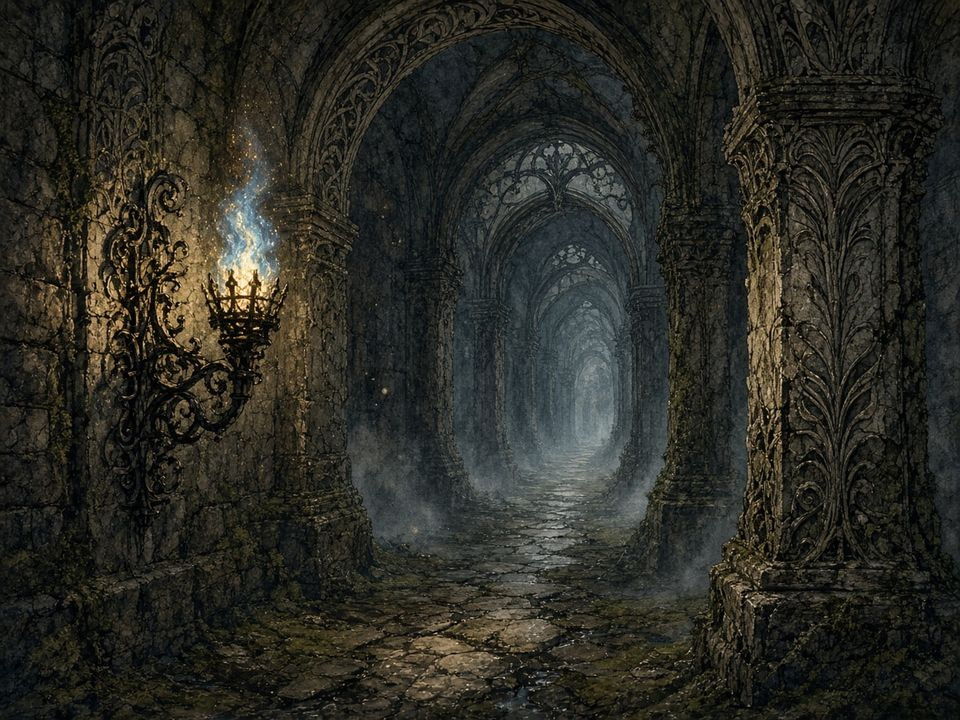
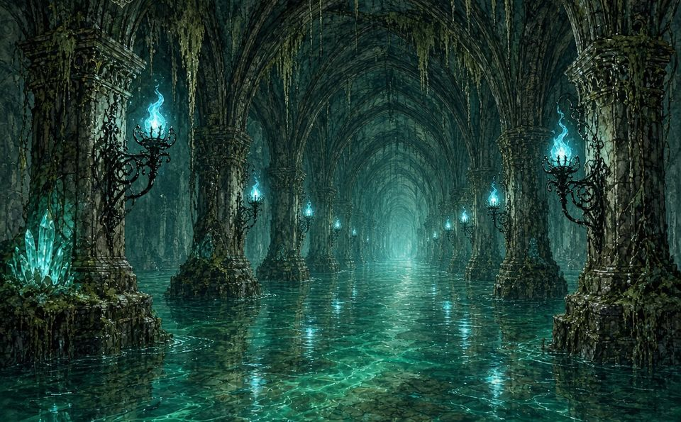
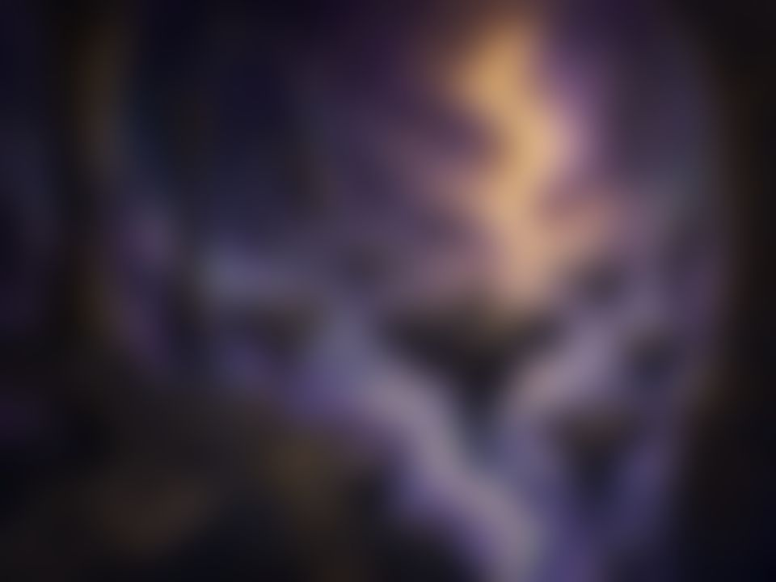
その正体は、出会うまでわからない。
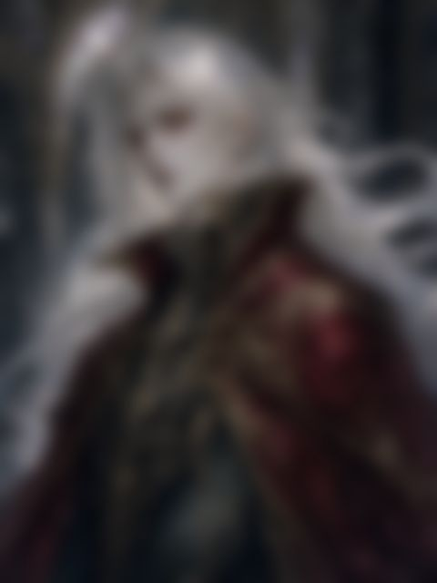
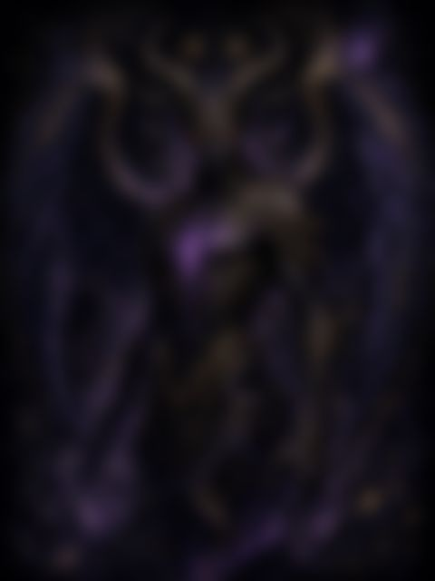
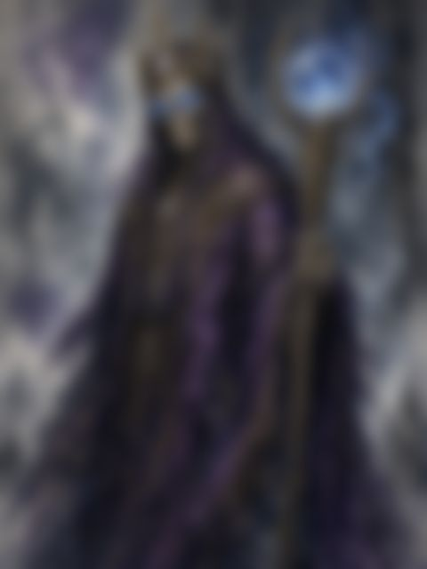
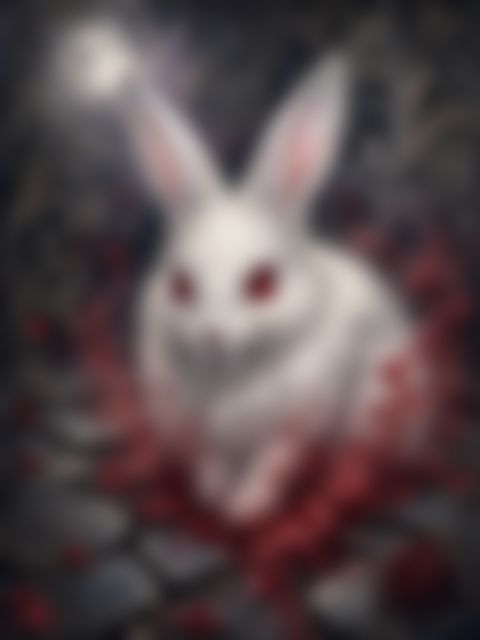
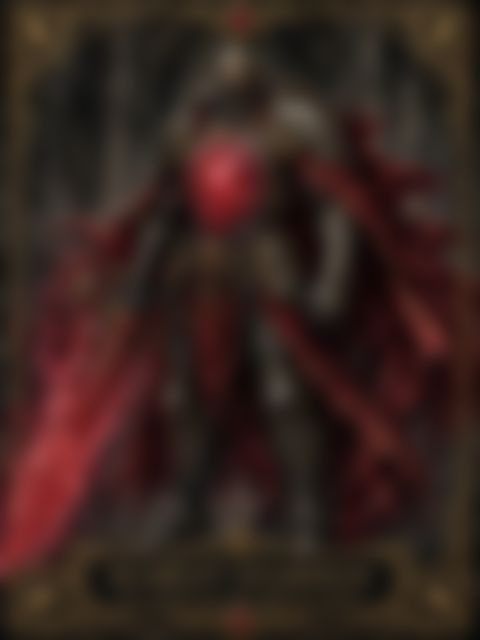
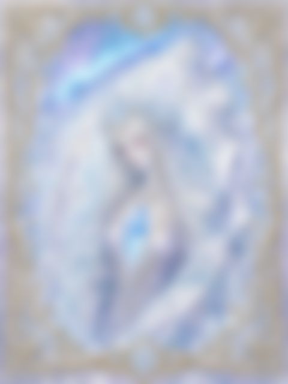
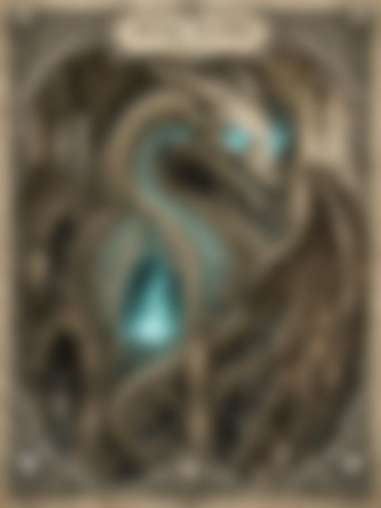
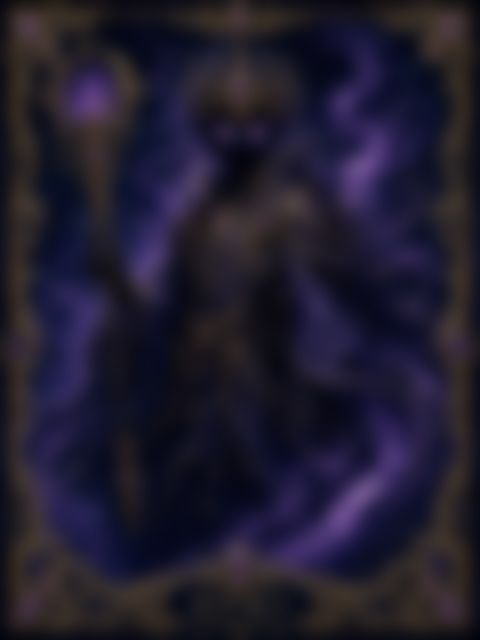
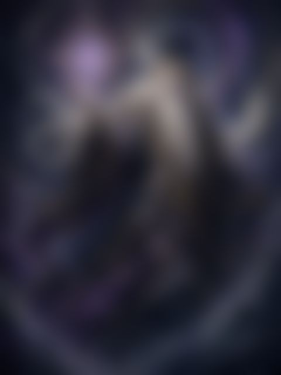
FEATURES
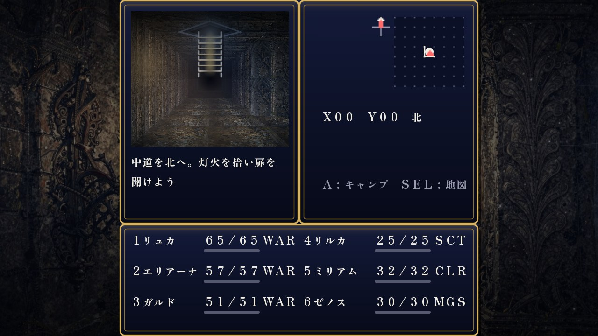
01
本格3DダンジョンRPGの系譜を継ぐ迫真のグリッド視野角。正面に迫る鉄格子（ポートカリス）や壁のアルコーブ（窪み棚）、床の感圧プレートや落とし穴、そして目の前に実体として立ちはだかる魔物たち。歩いたマスは自動で地図に残り、全画面地図や目印ピンで迷宮を攻略します。
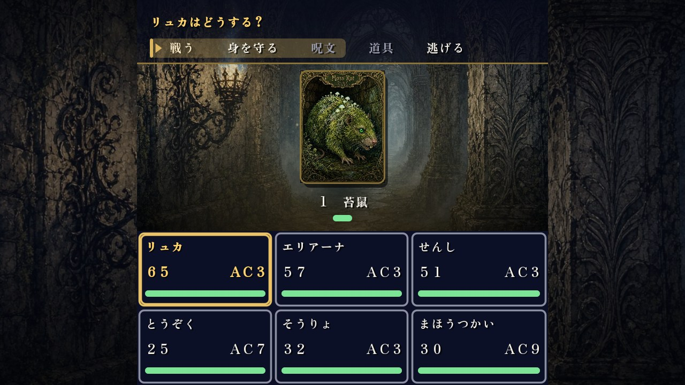
02
旅はリュカひとりから始まり、仲間は物語の中で加わっていく。迷宮を歩けるのは最大6人。ターン制のコマンド戦闘に、技と気力、仲間との連携技。戦闘速度の調整や「くりかえす」で、テンポよく遊べます。
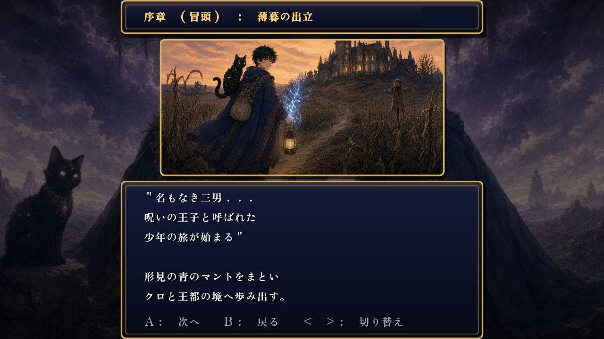
03
地の文は画面下の窓に、台詞は話している人を指す吹き出しに。横長の画面では窓も文字も大きくなり、じっくり読めます。自動送りと、日本語の読み上げ（一部の文）に対応。起動すると、オープニングの歌『青藍の外套』が物語の幕を開けます。
BGM・ジングル・効果音はアプリの中で合成して鳴らします。音質は「豪華／素朴」を切り替えられ、音量は11段階。
実績を達成すると画面上部でお知らせ。タイトル画面や設定からいつでも一覧を確認できます。
セーブ枠は3つ。戦闘の終わりや買い物・宿、物語の区切りで自動的に記録し、アプリを裏に回したときも保存します。
キャンプの「最強装備」、宿の「みんなで泊まる」、店と持ち物の装備比較、メッセージログなど、手間を減らす機能を搭載。
画面のボタンに加え、Bluetooth / USB のゲームパッドとキーボードに対応。ボタンの大きさや濃さも変えられます。
画面の言葉は日本語と英語。端末の言語に合わせて自動で切り替わり、設定からいつでも変えられます。読み上げは日本語の一部の文に対応。
SCREENSHOTS
画像を押すと大きく表示します。
DOWNLOAD
序章から終章まで、すべての章をアプリで遊べます。
物語
全編
序章から終章まで、すべてアプリの中に。
辿り着く結末は、ひとつとは限らない。
料金
基本無料
最後まで遊べます。
画面下部のバナー広告や移動時の広告が表示されます。
広告削除アイテム（買い切り）
500円
1度購入すると、画面下部バナー広告および迷宮から町への移動時広告を削除します（※脱出時のリザルト広告は維持されます）。設定やタイトル等から購入できます。
近日配信予定